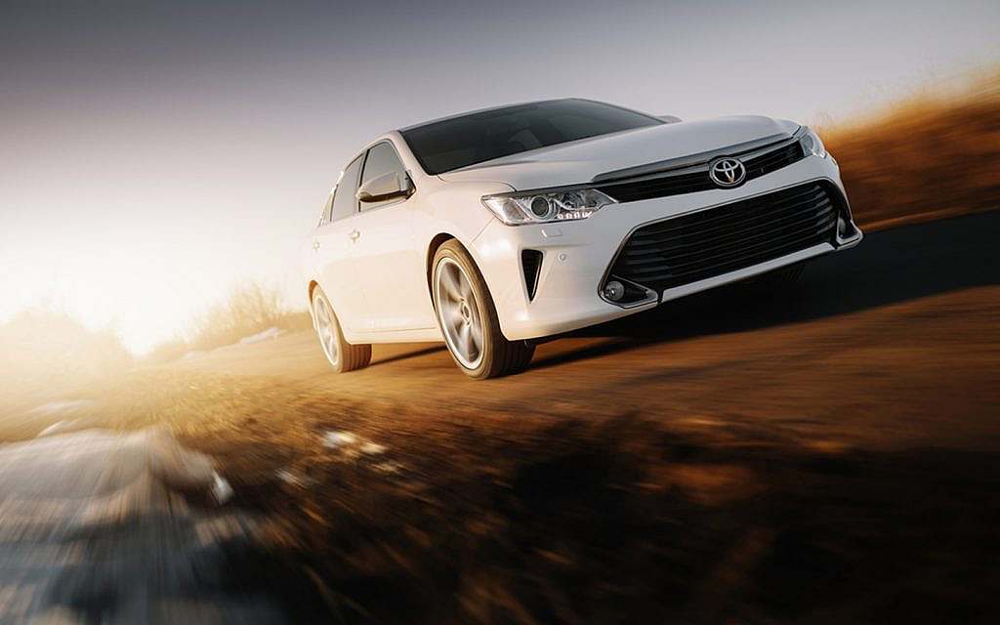

تحظى السيارات اليابانية بشهرة كبيرة بين الأفراد، فهي تمتاز بقوتها ومتانتها وكفاءتها في القيادة، فمنها سيارات السيدان والهاتشباك والدفع الرباعي، وجميعها تمتاز باستهلاكها الجيد في الوقود، فضلاً عن أسعارها المعقولة، وهو ما يزيد من الطلب على أنواع السيارات اليابانية في الامارات مثل نيسان وهوندا وميتسوبيشي وتويوتا، وهذا ما يوضحه تقرير موقع دوبيزل عن السيارات المستعملة بأسعار مناسبة في الامارات 2021. تحتل سيارات تويوتا اليابانية مكانة كبيرة وتشهد إقبال كبير من السكان في الامارات، ولا يمكن حصر الأسباب الكامنة وراء ذلك، بدءاً من درجة الفخامة والرقي في التصميمين الداخلي والخارجي وصولاً إلى قدرتها الكبيرة على تخطي التضاريس المختلفة وغيرها المزيد من المزايا. لكن، هل تساءلت يوماً ما القصة الكامنة وراء نشأة هذه العلامة التجارية المميزة؟ حسنناً، نخصص مقالنا هذا لتقديم معلومات عن شركة تويوتا وتسليط الضوء على تاريخ سيارات تويوتا على مر السنين.

: تسمية الشركة
ولدت شركة تويوتا على يد كيشيرو تويودا في عام 1937، والذي كان يتولى آنذاك إدارة شركة “أعمال تويودا للنسيج الآلي”، وكانت المركبات تُباع تحت اسم “تويودا”، أي اسم عائلة مؤسس الشركة، لكن تم تغيير الاسم إلى “تويوتا على يد “ريسابورو تويودا، الذي فضل استخدام هذا الاسم لسهولة كتابتها في اللغة اليابانية، وسهلة السماع واللفظ. هذا وتعني كلمة تويودا “حقل الأرز الخصيب”، لذا ساهم تغيير الاسم في إلغاء العلاقة بين الاسم والزراعة القديمة. في عام 1937، تم التسجيل الرسمي للشركة باسم “شركة تويوتا للسيارات”.